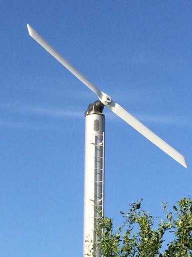
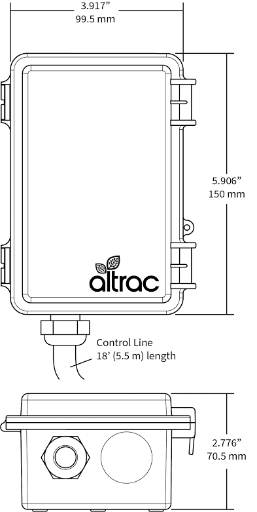
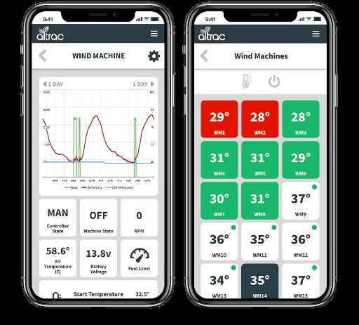
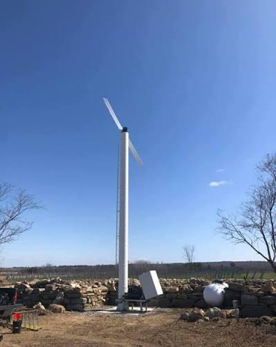
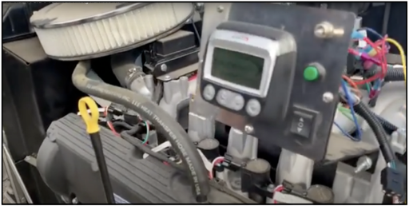

H.F. Hauff Chinook Wind Machines
Advanced automation for frost protection, controlled from your phone or browser

A rugged, weather-resistant cellular telemetry unit mounted directly to your Chinook tower.
An engineered plug-and-play assembly that bridges the Altrac controller with the Chinook's standard Murphy PV101 digital gauge panel.
An intuitive control suite for start/stop triggers, engine health indicators and real-time operational feedback from anywhere.
Turns autostart frost towers into fully automated, cloud-managed assets.
Ground-level engine of the tower supplies the diagnostic data.
Taps Port B of the Murphy PV101 digital panel over Modbus.
Cellular telemetry unit mounted on the tower.
Control and monitor from a mobile app or web browser.
Altrac acts as an advanced digital supervisor over the ground-level engine of the Chinook tower.
The harness taps Port B of the Murphy PV101 to pull high-precision diagnostics straight from the engine ECU.
Change start/stop temperatures globally or per machine from a smartphone as buds develop.
Tracks RPM and load; flags fan-blade or driveline shifts and can trigger a protective shutdown.
Alerts management if a MAN-OFF-AUTO switch is left in OFF or MANUAL before a frost event.
Updates every minute; calls, texts or push alerts for startup, low battery voltage and fuel drops.
Eliminates physical 'frost runs' during freezing hours. Managers monitor the whole ranch from home, so crews stay rested and deploy only when necessary.
Targeted engine shutoff at sunrise or the exact minute an inversion layer disperses, drastically reducing fuel costs.
Immediate 'Battery Disconnect' and 'Low Voltage' notifications safeguard machinery from field theft and unexpected battery drainage.
Downloadable Excel reports track exact runtime metrics and historical temperature curves to guide seasonal maintenance.


| Operating voltage | Designed to operate within a standard 12VDC agricultural machinery electrical framework. Includes integrated firmware protections that enter a low-power standby mode during long out-of-season periods to mitigate parasitic battery drain. |
| Environmental protection | Enclosed within an impact-resistant, industrially sealed, UV-stabilized weather enclosure engineered to endure structural engine vibration and sustained freezing agricultural field conditions. |
| Control interface | Employs an integrated high-flexibility wiring trunk terminating in an industry-standard, heavy-duty automotive-grade 12-Pin Deutsch Connector (Part Number: AT06-12S). |
| Display connection | Plugs directly into open communication Slot 'B' on the rear panel of the Murphy PV101 gauge display. |
For wiring and installation details, contact H.F. Hauff.


Altrac Wind Machine Station (ST100) + H.F. Hauff Chinook Wind Machine